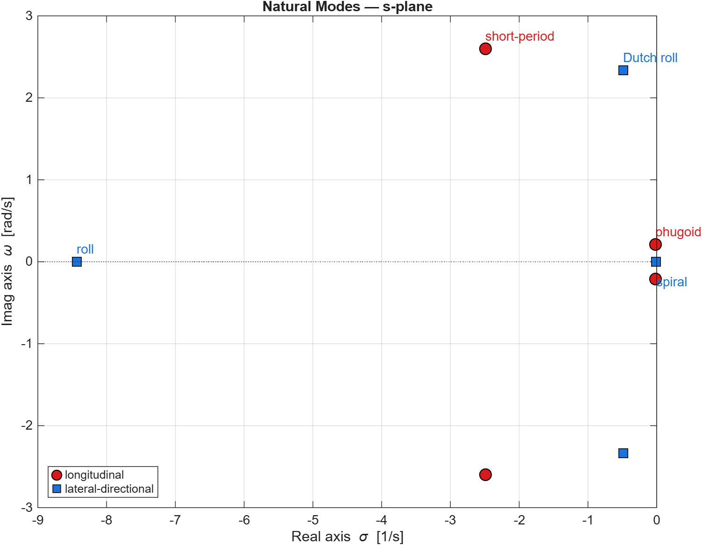
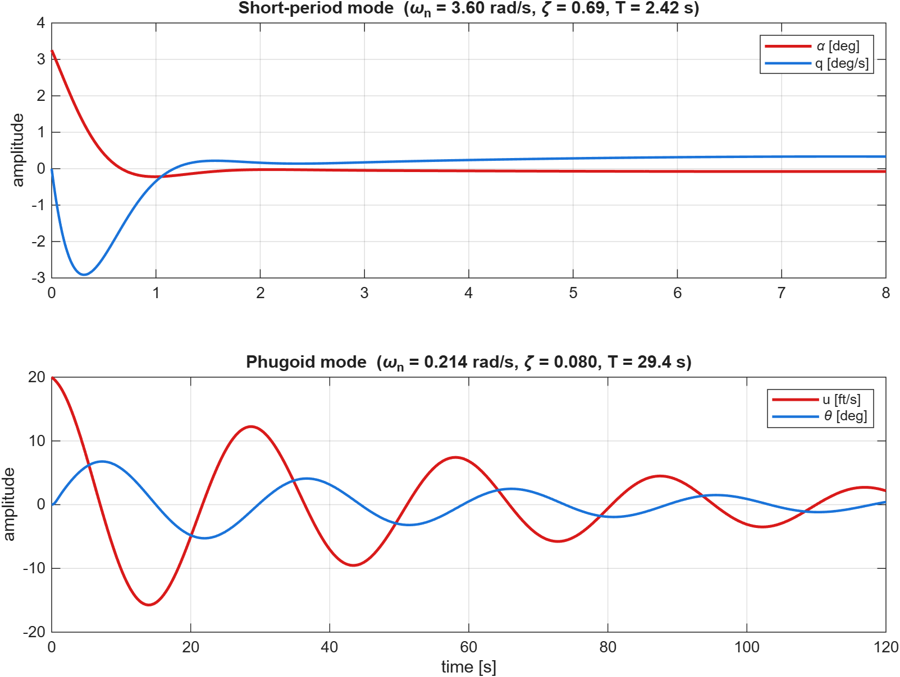
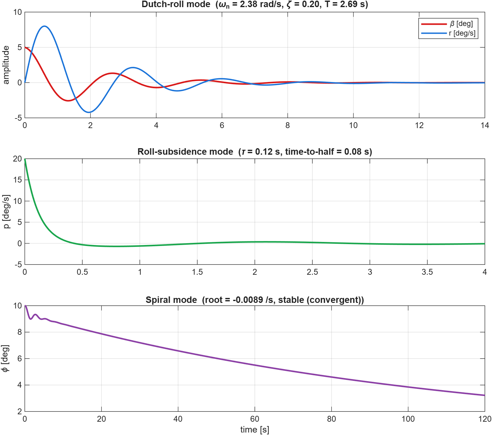

Mar-Apr 2026
6-DOF Flight Dynamics & Mode Analysis
Eigenstructure of the aircraft natural modes
Decoupled longitudinal and lateral-directional linear models of a general-aviation aircraft, with the natural modes extracted live: short-period, phugoid, Dutch roll, roll subsidence and spiral, shown in the s-plane and the time domain.
Highlights
- Short-period ωn 3.60 rad/s, ζ 0.69; phugoid ωn 0.21 rad/s, ζ 0.08
- Dutch roll ωn 2.38 rad/s, ζ 0.20; fast roll subsidence; slow stable spiral
- Modes computed from the state matrices and classified automatically
- Results consistent with published Navion-class values
Results & figures


